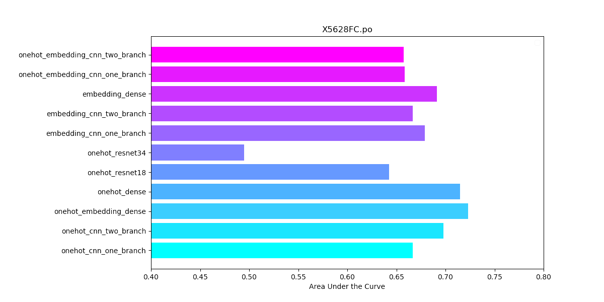

DeepChromeHiC
Catalog:
DeepChromeHiC Quickstart
Run on a Supercomputer
DeepChromeHiC.py
Data Structure
data_preprocessing.py
train.py
test.py
model.py
Log and Processing Tools
reStructuredText Writing Help
DeepChromeHiC
»
Welcome to DeepChromeHiC’s documentation!
View page source

Welcome to DeepChromeHiC’s documentation!
¶
Catalog:
DeepChromeHiC Quickstart
Module Introduction
System Requirements
Help Page
How to train and test a new gene
Run on a Supercomputer
Supercomputer using the Ubantu system
Supercomputer using the Slurm job system
Supercomputer using the PBS job system
DeepChromeHiC.py
Help Page
Command Example
Module Introduction
Data Structure
legend
Actual Structure
data_preprocessing.py
png generation part
npz generation part
train.py
train_cnn_dense_resnet
train_cnn_separate
train_embedding
test.py
test_cnn_dense_resnet
test_cnn_separate
test_embedding
model.py
Module Introduction
Log and Processing Tools
log format
practical tools
other
reStructuredText Writing Help
Level 1 heading